Рим вважається «колискою західної цивілізації», в ньому зароджувалися сучасні науки та мистецтво. Недарма сьогодні це місто одне з найпопулярніших центрів туризму. Приїжджати в Італію краще між сезонами, туристів менше, та й не так жарко, як влітку. Також є тиждень культури, що проходить в кінці квітня. Під час нього всі музеї, крім ватиканських, можна відвідувати безкоштовно.
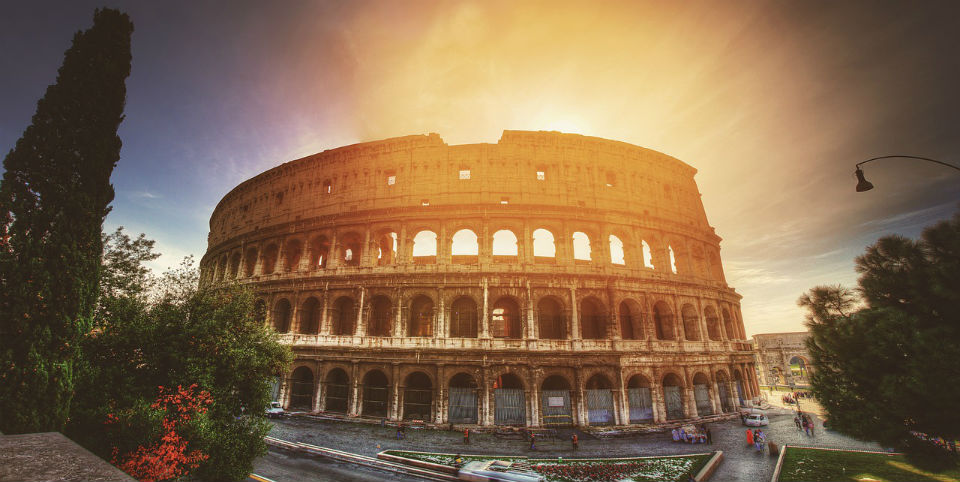Амфітеатр вважається головною пам’яткою Риму і в поданні мало потребує. Колізей вражає своєю величністю, духом історії, потужними стінами, які пам’ятають бої гладіаторів і кров загиблих бійців. Думки туристів все ж поділяються: деякі вважають це місце переоціненим.
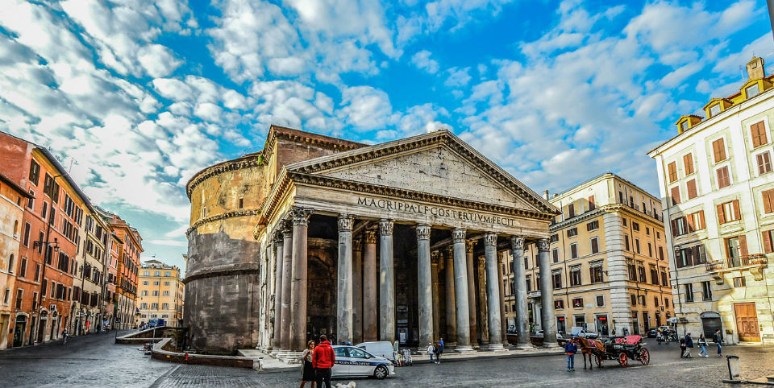Тут все просякнуте духом античності, ніхто не знає, хто і як побудував цей храм. Всередині немає вікон, світло ллється з отвору в куполі, званим окулюсом. Пантеон був побудований до нашої ери та величезну кількість разів реставрувався. Спочатку храм був язичницькою спорудою, зараз він християнський. Це означає, що в нього не пускають з непокритими плечима й у відвертому одязі. Відвідування можуть заборонити, навіть якщо у вас кольорове волосся або на тілі є татуювання.
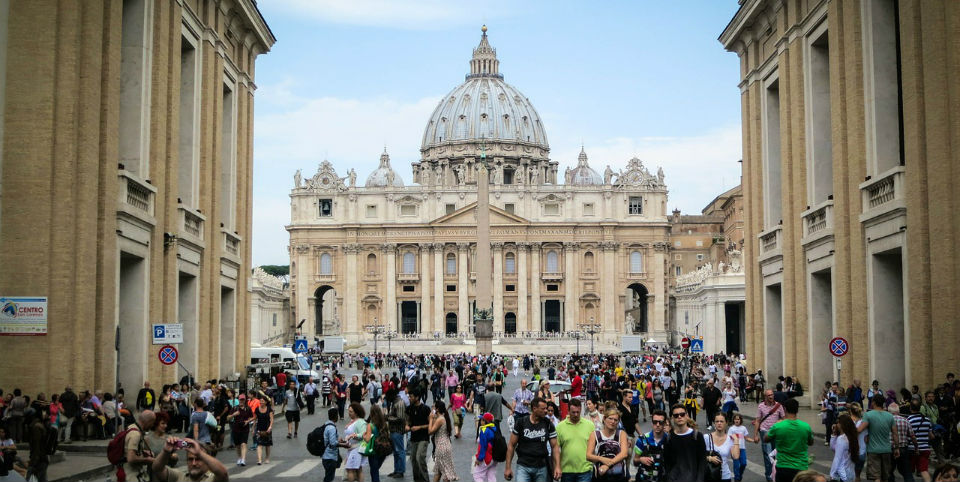Ця окрема держава буде цікавою своїм музеєм і християнськими будовами. Особливо Ватикан приваблює віруючих людей, які приходять в релігійний центр. За шість століть існування тут помістилися будівлі та скульптури різних епох і стилів. Саме в музеї Ватикану знаходиться відома Сикстинська капела.
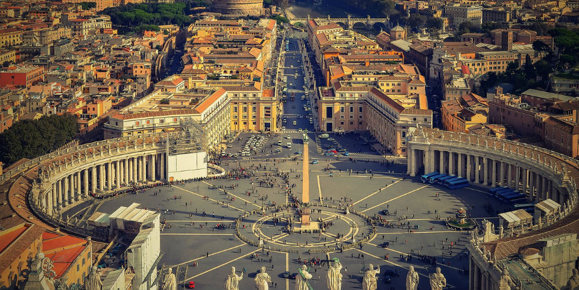Рим багатий на цікаві місця, але Ватикан майже повністю складається з них. Головна площа разом з базилікою є центром держави. До створення собору доклав руку Мікеланджело. Усередині маса різних скульптур, фресок. З вежі відкривається вид на Рим. Плюс цього собору — невеликі черги туристів. Площа виконана у вигляді двох півкіл, зазвичай на ній збираються натовпи віруючих, щоб слухати виступи понтифіка.
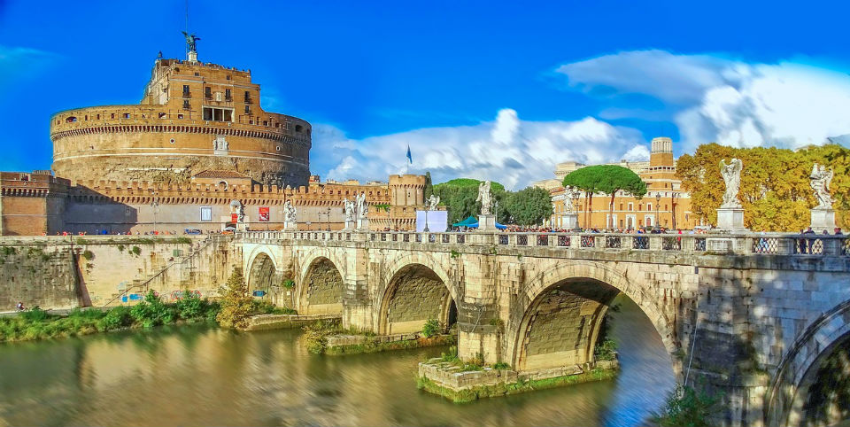Це місце просякнуте духом християнства, його використовували як місце проживання для Пап в небезпечний час і збереження скарбів. Знаходиться замок недалеко від Ватикану, в самому серці Риму. Всередині багато цікавих приміщень, включаючи невеликий музей зброї та кімнату з ювелірними прикрасами.
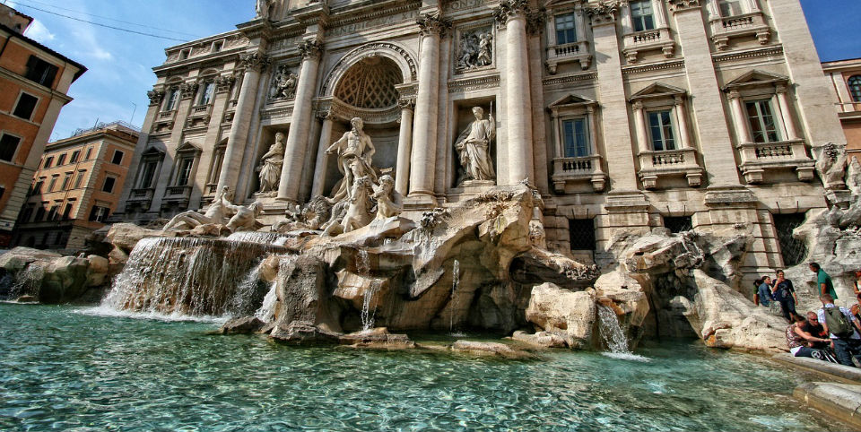Фонтан краще відвідати до сьомої ранку — тут мінімум туристів, і можна навіть влаштувати собі невелику фотосесію. У денний час навколо збираються величезні натовпи, що відштовхує деяких мандрівників. Люди вірять, якщо кинути в фонтан монетку через ліве плече, повернувшись до нього спиною, людину чекатимуть любов, багатство і виконання бажань. Щороку з-під води виловлюється майже півтора мільйона євро, які йдуть у міський бюджет. Діставати гроші з фонтану категорично заборонено.
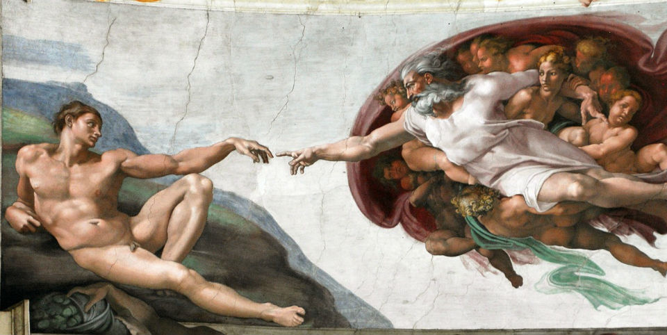Найбільша з робіт Мікеланджело. Всі твори захоплюють дух і гіпнотизують. Фотографувати та знімати відео не можна, навіть заборонено розмовляти всередині, але при вигляді такої краси це і не хочеться робити. Через великий потік туристів зал іноді переповнюється, що дуже псує враження. Хочете спокійно відвідати музей Ватикану і послухати розповіді про фрески, замовте Автобусні тури в Італію. Так ви побачите максимум пам’яток Риму, користуючись при цьому послугами російськомовного гіда і бонусами швидкого проходження черг у всі музеї.
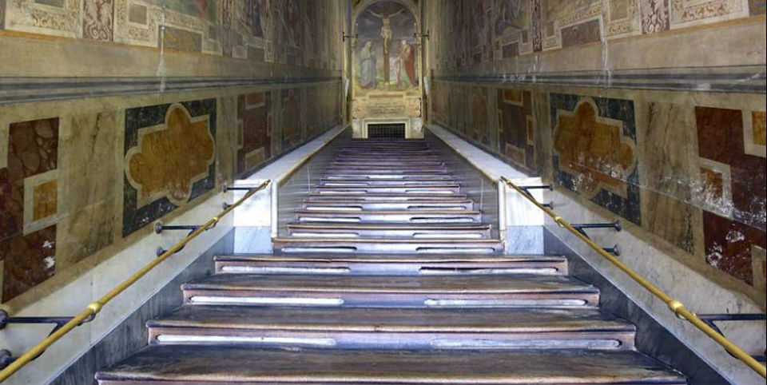По цих сходах колись Ісус піднімався до Понтія Пілата, через що вони отримали свою назву. Сьогодні пройтися по них може кожен бажаючий. Подолати всі 28 сходинок можна тільки на колінах, читаючи при цьому молитви. Варто відвідати ці сходи, якщо ви дійсно хочете відчути всю духовність біблійного місця.
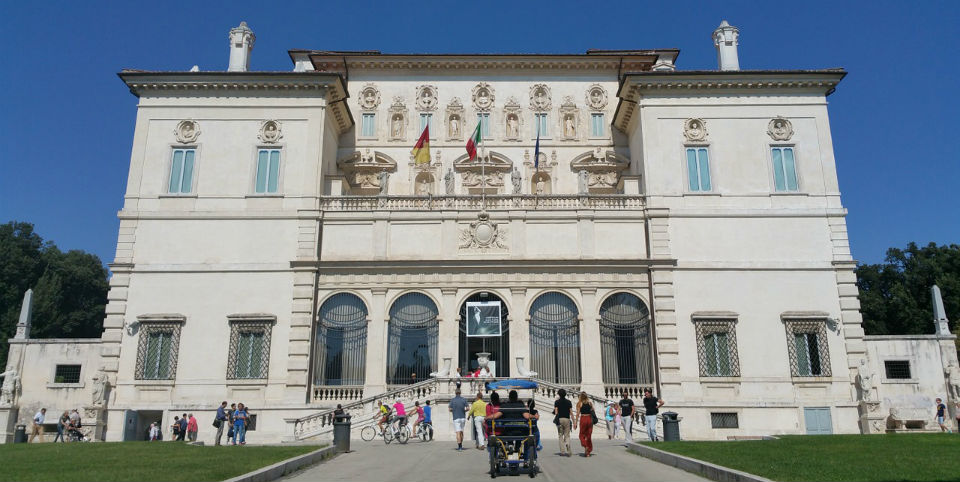Вілла Боргезе вміщує в себе колекцію картин, скульптур, а також величезний парк на території. Бронь варто здійснити на сайті за кілька тижнів до відвідування. Для входу потрібен тільки номер броні. Екскурсія по галереї триває дві години. За цей час можна насолодитися роботами Берніні, Тиціана, Рафаеля, Рубенса. Брати гіда не варто: відвідувачі стверджують, що це буде тільки відволікати. У парку можна відпочити від спеки. Щоб побачити його повністю, можна орендувати автомобіль.
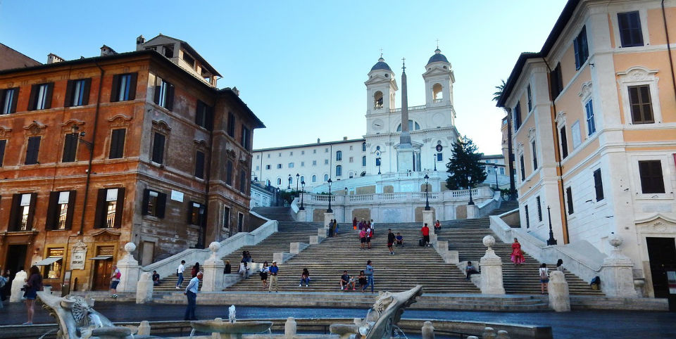Ці сходи вважаються найкрасивішими в Європі. На початку березня тут особливо чарівно, коли починають цвісти азалії. Важливо знати, що сидіти або їсти на сходах не можна, за це можуть оштрафувати. Краще просто пройтися по них від Іспанської площі до пагорба Пінчо. Перекусити можна в кафешках навколо, або в найпершому Макдональдсі в Італії, який також знаходиться поруч.
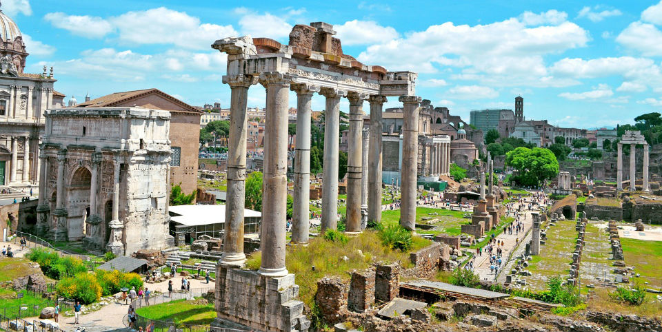Форум — це те, що потрібно обов’язково подивитися в Римі, бо це одна з найдавніших частин міста. Раніше це був ринок, центр політичного і суспільного життя. Сьогодні напівзруйновані будівлі старовинного Риму стануть знахідкою для шанувальників археології. Крім того, тут можна влаштувати атмосферну фотосесію.
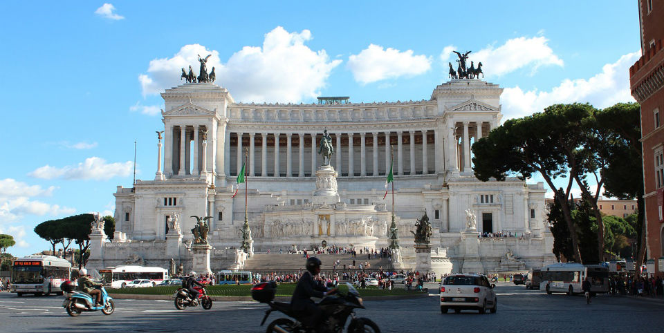Якщо ви ставите питанням, куди ще сходити в Римі, то потрібно відвідати центральну площу міста. Через Пьяцца Венеція проходить відразу 6 головних міських вулиць, по яких можна дістатися до інших визначних місць Риму. У центрі площі стоїть монумент Вітторіано, поруч розташований палац Бонапартів, а також мадам Лукреція — статуя, що розмовляє. На ній багато хто залишав свої політичні послання.
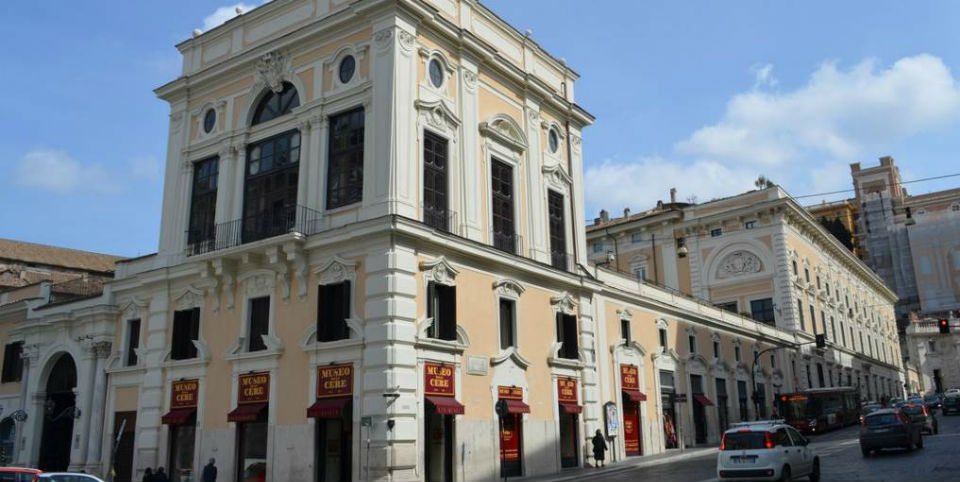Історія палацу починається на початку 12 століття, тоді ним володіли предки роду Колона. Через 2 століття почалося будування нового комплексу, яке тривало понад 500 років. Через це в маєтку знаходяться скульптури та картини різних епох.
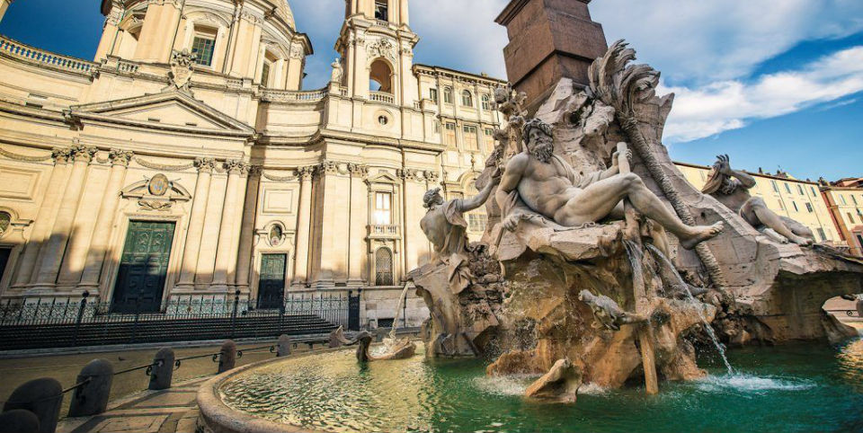Фігури, що зображені на фонтані, символізують головні ріки різних частин світу: Дунай, Ніл, Ганг і Ла-Плата. Автором скульптур є Берніні, він дивом і хитрістю домігся, щоб його проект був здійснений. Перевага фонтану Чотирьох Річок перед Треві в тому, що біля останнього завжди великий натовп, в якому неможливо протиснутися. У фонтані Чотирьох Річок вода набагато чистіша, а навколо часто можна побачити мімів, музикантів і художників.
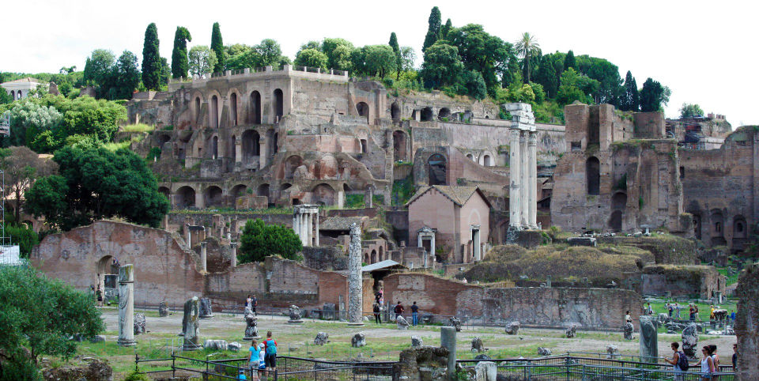Рим був побудований на семи пагорбах, і Палатин — головний з них. На ньому, за легендою, вовчиця годувала Ромула і Рема. Сьогодні Палатин — історичний центр Рима. На ньому збереглися безліч стародавніх будівель, включаючи вілли аристократів. З вершини відкривається прекрасний вид на місто.